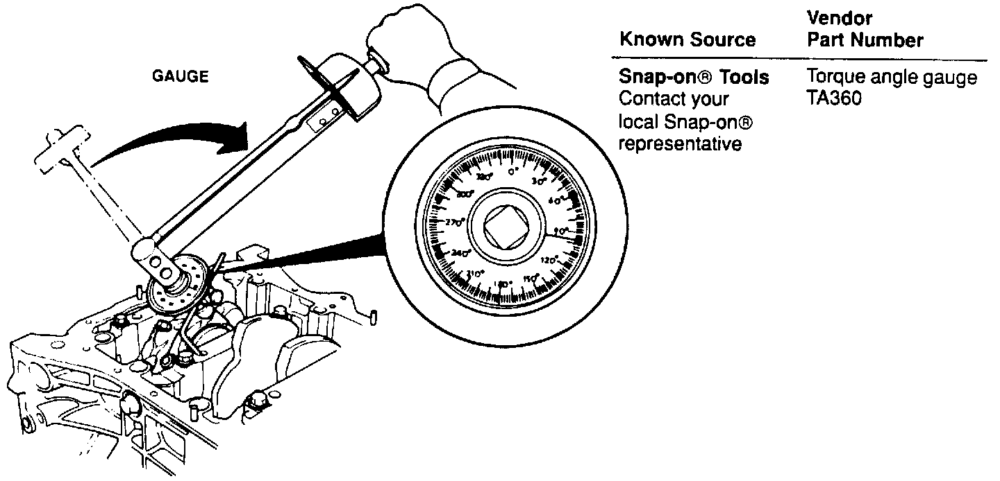

Torque Angle Gauge

This tool is not available from American Honda. You must purchase one from a local source. The tool compensates for friction and stretch (which can result in false torque readings) when torquing the nuts on rod bearing cap bolts during engine reassembly. How to use the gauge is shown in the Service Manual on page 7-19.